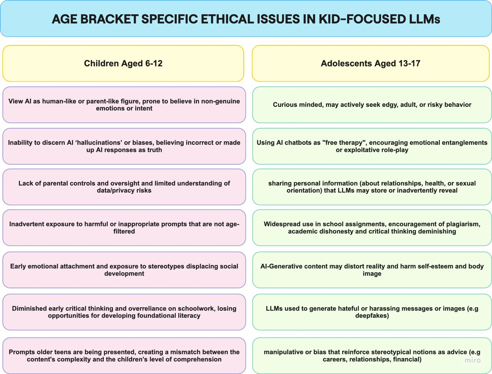
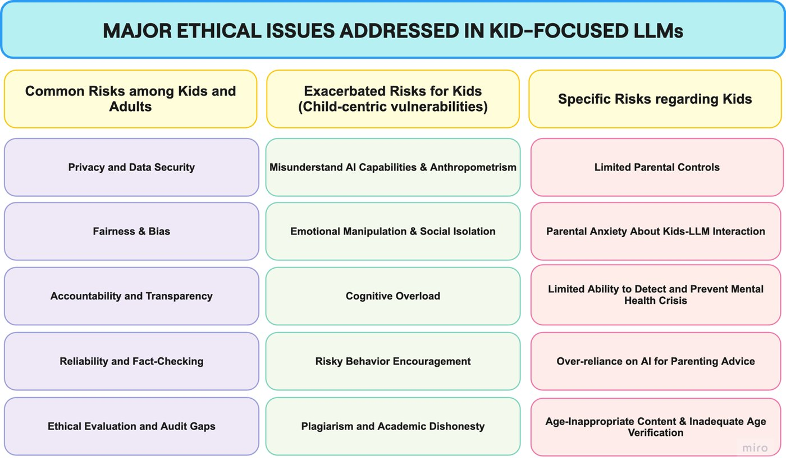
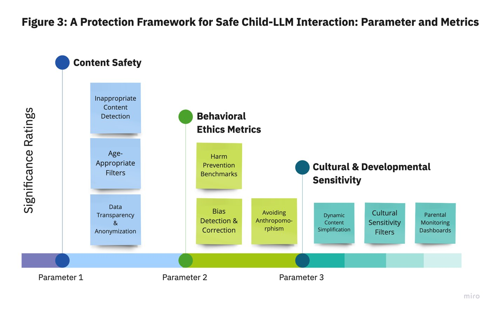
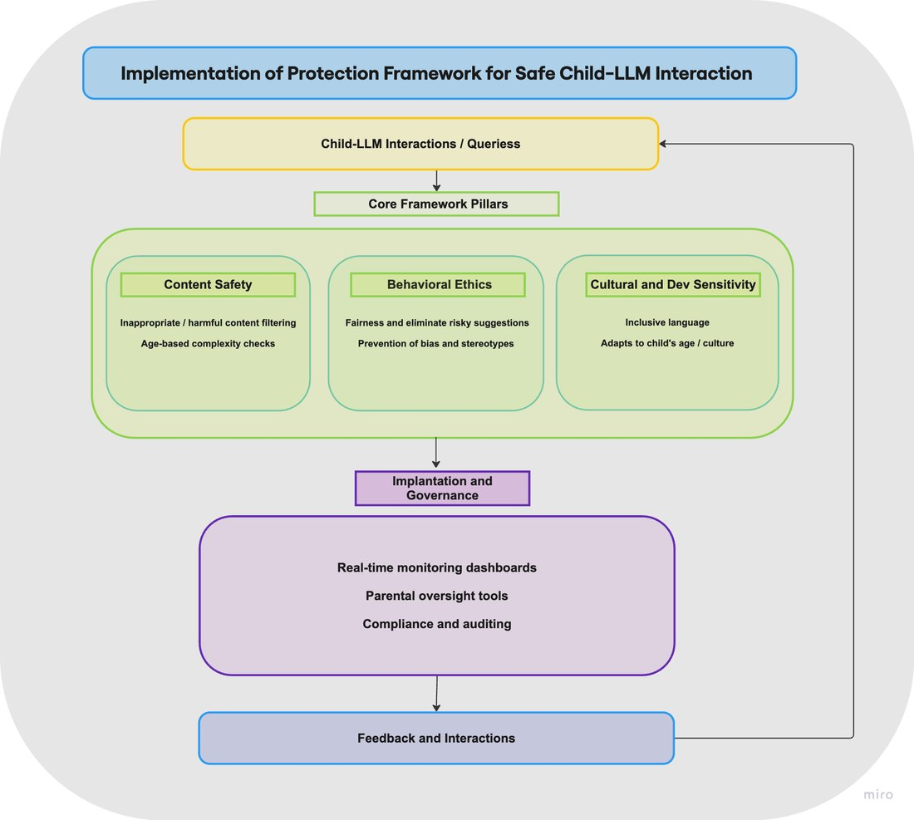

LLMs now power tools that children use for learning, companionship and creative play, which raises safety, privacy, developmental and security risks. We conduct a systematic literature review of child–LLM interaction risks and organize the findings into a structured map that separates parent-reported concerns, empirically documented harms, and the gaps between perceived and observed risk. Comparing how surveys, incident reports, youth interaction logs and governance guidance define harm, we derive a protection framework with measurable targets for developers, educators and policymakers.
Highlights
Parents’ concerns and documented harms do not always line up; the review maps where perceived and observed risks diverge.
Different evidence sources define “harm” differently, which leads to conflicting mitigations.
The framework pairs child-specific content safety and developmental sensitivity with security-grade defenses against prompt injection and multimodal jailbreaks.
Each safeguard comes with a measurable target, from age-calibrated readability to monitoring transparency.
Framework

Fig. 1: age-bracket-specific ethical issues for children (6–12) and adolescents (13–17).

Fig. 2: major ethical issues in kid-focused LLMs: risks shared with adults, risks exacerbated for kids, and risks specific to kids.

Fig. 3: the protection framework: content safety, behavioral ethics metrics, and cultural and developmental sensitivity.

Fig. 4: implementing the framework, from child–LLM interactions through the three pillars to governance and feedback.
Risk map
Evidence streams
Parent-reported concerns
Empirically documented harms
Gaps between perceived and observed risk
Child–LLM interaction
Risk areas
Content safety
Privacy
Developmental risk
Security: prompt injection and multimodal jailbreaks
Safeguards
Protection framework
Child-specific content safety
Developmental sensitivity
Security-grade controls against adversarial misuse
Measurable
Evaluation targets
Harmful-content avoidance
Age-calibrated readability
Bias parity checks
Prompt-injection robustness
Monitoring transparency
Summary: from risk map to protection framework and measurable evaluation targets.
How it works
Systematic literature review of child–LLM interaction risks.
Comparison across surveys, incident reports, youth interaction logs and governance guidance.
Synthesis of implied mitigations into a protection framework.
Operational evaluation targets for developers, educators and policymakers.
Jiao, J., Afroogh, S., Chen, K., Murali, A., Atkinson, D., & Dhurandhar, A. (2025). LLMs and childhood safety: Identifying risks and proposing a protection framework for safe child-LLM interaction. arXiv preprint arXiv:2502.11242.